第４編 債権総論
第５章 債権の消滅
第１節 弁済
Ⅳ 弁済の提供
1. 意義
：債務者側で必要な準備行為をして、債権者の協力を求める行為
なお、債務の履行について債権者の協力を必要としない場合には、弁済の提供の問題を生じないことに注意が必要である（例えば不作為債務）。
2. 趣旨
ほとんどの債務では、債権者の協力がなければ履行を完了することはできない。このような場合に債権者が必要な協力をしないために債務者が履行を完了することができず債務不履行責任を負うというのは不当である。そこで、債務者の側で必要な行為をした以上は、不履行により生ずる責任を免れるとしたのである。
3. 要件
弁済の提供と認められるためには、債務の本旨に従った現実の提供、又は口頭の提供が必要である（493条）。
弁済の提供は、いかなる程度になされなければならないのだろうか。
民法は、提供の程度について、現実の提供と口頭の提供とに分けて規定を設けている。弁済の提供は、原則として、現実の提供をすべきである。
1. 現実の提供（493条本文）
：債権者が協力（受領）すれば弁済が完了する程度の準備をすること
具体的にいかなるものが現実の提供となるかの判断には、信義則が大きな役割を果たす。
いかなる場合に現実の提供があったといえるかは、債務ごとに考える。
(1) 金銭債務
(a) 債務全額の提供が必要である。ただし、僅少な不足であれば信義則上提供があったものとされる場合がある（最判昭35.12.15）。
(b) 金銭を持参して債権者の住所に行って、支払をなすべき旨を述べれば、金銭を債権者の面前に提示する必要はない（最判昭23.12.14）。
(c) 債務者が約束の日時に金銭を持参して債権者の住所へ行ったが、債権者が外出していて会えなかったときも現実の提供となる（大判大10.３.23）。
(2) 金銭債務以外
(a) 不特定物の一定量を交付すべき債務では、全部の提供が必要である。ただし、僅少の不足であれば、信義則上、現実の提供があったものとされることがある。
(b) 不動産の売主は、占有の移転を提供しなくても移転登記手続を可能にすれば現実の提供といえる（大判大７.８.14）。
2. 口頭の提供（493条ただし書）
：債務者が弁済の準備をしたことを通知して、債権者に受領を催告すること
(1) 要件
(a) 口頭の提供で足りるのは、以下のいずれかにあたる場合である。
①債権者があらかじめ受領を拒絶した場合
②債権者の行為を必要とする場合
※①の場合に口頭の提供で足りるとされるのは、債権者が拒絶しているのに債務者に履行せよというのは公平に反するからである。これに対し、②の場合は、債権者の協力がなければ、弁済が不可能だからである。
(b) 受領の拒絶は明示の場合に限らず、黙示でもよい。賃貸人が増額賃料でなければ受領しないという場合（大判昭10.５.16）、理由なく受領期日の延期や契約の解除を要求し、自己の反対給付の履行を拒む場合（大判昭18.６.21）等である。
(c) 債権者の受領拒絶は、正当でないことが必要である。従って、現実の提供が不適法なため受領を拒まれたときは、口頭の提供をしても無効である（大判大10.６.30）。
(2) 「弁済の準備」
(a) 債務者は、弁済の準備をして、通知しなければならない。
(b) 弁済の準備の程度
ⅰ 債権者があらかじめ受領を拒んだとき
債権者が翻意して受領しようとすれば債務者が給付を完了できる程度である。
銀行から資金借用の予約をして、いつでも弁済できる程度に資金調達の道を立てておけばよい（大判大７.12.４）。
ⅱ 債権者の行為を要するとき
債権者の行為があれば、直ちに弁済を完了できる程度である（大判大10.11.８）。
(c) 弁済の準備ができない経済状態にあるため提供ができない場合には、債権者の弁済を受領しない意思が明確でも、債務不履行責任を免れない（最判昭44.５.１）。
(3) 口頭の提供も不要とされる場合
(a) 債権者たる賃貸人が賃貸借契約そのものの存在を否定する等弁済を受領しない意思が明確である場合には、債務者たる賃借人は口頭の提供をしなくても債務不履行の責任を負わない（最大判昭32.６.５）。
(b) しかし、単にあらかじめ受領を拒絶しただけの場合には翻意を促すために口頭の提供が必要である。
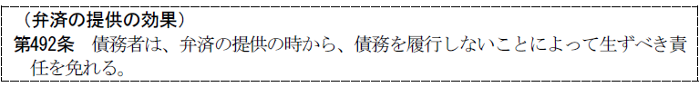
1. 債務者は債務不履行を理由とする損害賠償責任を負わず（492条）、遅延利息・違約金を支払う必要もない。
また、担保権の実行を免れる。ただし、弁済の提供により債務が消滅するわけではないから、担保物の返還は請求できない（大判昭６.５.22）。
2. 相手方の同時履行の抗弁権（533条）を失わせる。
3. 債務者の注意義務が軽減される（自己の物におけると同一の注意義務になる）。
※ 明文はないが、解釈により認められている。
4. 増加費用請求（485条ただし書）ができる。
5. 約定利息の発生を止める（大判大５.４.26）。
【種類債権の特定（401条２項）と弁済の提供（492条）】
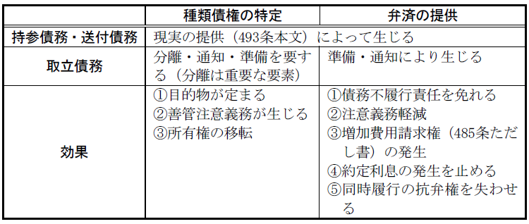
第２節 代物弁済
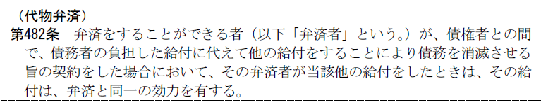
代物弁済とは、例えば、金銭支払を目的とする債務がある場合に、その金銭の支払に代えて他の金銭以外の物を給付することによりその債務を消滅させる旨の債権者と弁済者との契約をいう（482条）。弁済者は債務者に限られない。
①債務が存在すること、②本来の給付に代わる給付をすることについての合意があれば成立する（諾成契約）。
代物弁済によって合意された給付行為があった場合、その給付は弁済と同一の効力を有する（482条）。
① 代物の価格に関係なく債務は全部消滅する。
② 本来の債権に伴う抵当権・質権・保証等の担保も付従性により消滅する。
③ 給付された物や権利に瑕疵があっても、債権消滅の効果が生じ、債権者は本来の給付や瑕疵のない物の給付を請求することはできないと解されていた。しかし、他の有償契約と同様、物の不適合を理由とする責任の問題と考えると、債権者は追完請求、損害賠償請求、契約の解除ができることになる（559条、562条１項本文）。
第３節 相殺
Ⅰ 意義
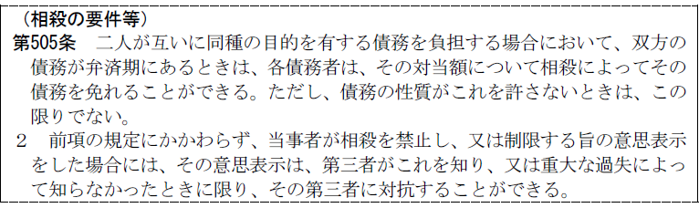
相殺とは、例えば、Ａに対して債務を負うＢもまた、Ａに対して同種の債権（反対債権）を有する場合において、Ａ又はＢが相殺の意思表示をすることによって、その対当額について債務を免れることができるとするものである（505条１項本文）。
相殺する側の債権を自働債権といい、相殺される側の債権を受働債権という。
1. 簡便な決済
弁済の手数を省略して、簡便に決済することができる。
2. 当事者間の公平
一方当事者が無資力である場合にも、相手方は債権の回収ができるので、公平の要請にかなう。
3. 担保的機能
相殺が機能的には担保としての役割を果たす。
Ⅱ 要件
相殺適状にあり、かつ、相殺禁止に当たらないことが必要である。
①２人互いに債務を負担すること（債権の対立）、②両債権が同種の目的を有すること、③両債権が弁済期にあること、④両債権が性質上相殺を許さないものでないこと
上記①～④の要件を充たすとき、これを相殺適状にあるという。
1. 債権の対立（要件①）
(1) 自働債権
(a) 原則
自働債権は、原則として、相殺者自身が被相殺者に対して有する債権であることを要する。
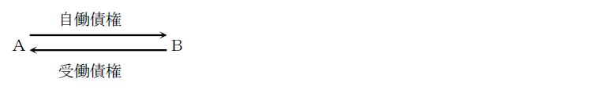
(b) 例外
第三者に対する債権で相殺できる場合
ex．債権譲渡（469条）の場合
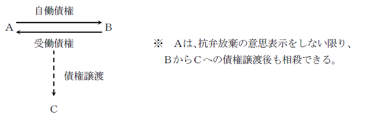
Ｑ 相手方の第三者に対する債権を受働債権として、自己の相手方に対する債権で相殺できるか
→ 否定説（大判昭８.12.５〔抵当不動産の第三取得者が抵当権者に対して有している債権による相殺につき〕）
（理由）
相殺の担保的機能からすれば、債務者が債権者に対して有する債権の担保を第三者によって消滅させられてしまうことは妥当でない。
(2) 例外
時効消滅した債権であっても、その消滅以前に相殺適状にあればこれを自働債権として相殺できる（508条）。
508条は自働債権が時効消滅した場合でも、その消滅以前に相殺適状にあったときには例外的に相殺を認めたものである。時効消滅前に両債権が相殺適状にあるときは、当事者は相殺により自動的に清算されたものと期待をもっているのが普通であり、本条は相殺に対するこのような当事者の信頼を保護したものである。
＜判例＞ 最判昭36.４.14
消滅時効の完成した債権を譲り受け、これを自働債権としてする相殺は許されない。
2. 両債権が同種の目的を有すること（要件②）
通常は金銭債権であるが、種類債権でも相殺は可能である。
3. 債権が弁済期にあること（要件③）
自働債権については、相手方の期限の利益を一方的に奪うことはできないこ とから、常に弁済期にあることが必要である。ただし、担保の滅失・損傷等による期限の利益の喪失（137条）や、期限の利益喪失約款によって、相手方が期限の利益を失う場合がある。
自働債権について期限の定めがないときは、いつでも履行を請求できるから、直ちに相殺できる（大判昭８.９.８）。
※ 受働債権については、相殺者は原則として期限の利益を放棄できるので、必ずしも弁済期にある必要はない。
4. 両債権が性質上相殺を許さないものでないこと（要件④）
(1) 現実に履行をしなければ意味のないもの ex．なす債務、不作為債務
(2) 抗弁権の付着した債権
自働債権に抗弁権（同時履行の抗弁権、催告・検索の抗弁権）が付着している場合は、相手方の抗弁権を奪うことになるため相殺できない。
1. 当事者の意思による相殺禁止（505条２項）
当事者は相殺を禁止することができる。ただし、善意・無重過失の第三者には相殺禁止を対抗できない。
2. 不法行為債権を受働債権とする相殺の禁止（509条）
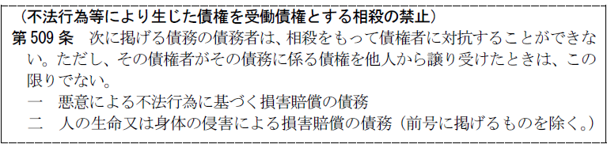
不法行為の被害者に対して、現実の弁済により損害のてん補を受けさせるとともに、不法行為の誘発を防止するために、悪意の不法行為による損害賠償請求権を受働債権とする相殺を禁止したものである。
また、人の生命・身体の侵害による損害賠償請求権については、不法行為に基づくものに限らず、債務不履行に基づくものであっても、これを受働債権とする相殺を禁止した。被害者に現実に弁済を受けさせてその保護を図る必要性は、不法行為に基づく損害賠償請求権と同様に認められるからである。
なお、その債務に係る債権が他人に譲渡された場合は、被害者保護を図る必要がなくなることから、相殺は禁止されない（509条柱書ただし書）。
(1) 許される事例
(a) 被害者側からの相殺、すなわち、不法行為に基づく損害賠償債権を自働債権とし、不法行為による損害賠償債権以外の債権を受働債権とする相殺は許される（最判昭42.11.30）。この場合、不法行為を誘発するということはないからである。
(b) 相殺契約によって不法行為による損害賠償請求権を受働債権とする相殺をすることは許される（大判大元.12.16）。
(2) 許されない事例
自働債権と受働債権が共に悪意の不法行為によって生じたものであるときには、相殺は許されない。
3. 差押禁止債権（ex．扶養料・恩給）を受働債権とする相殺の禁止（510条）
差押禁止債権の債務者は相殺をもって債権者に対抗することができない。
差押禁止の趣旨は、債権者に現実に弁済を受けさせるように保障することだからである。
4. 差押えを受けた債権を受働債権とする相殺の禁止（511条）
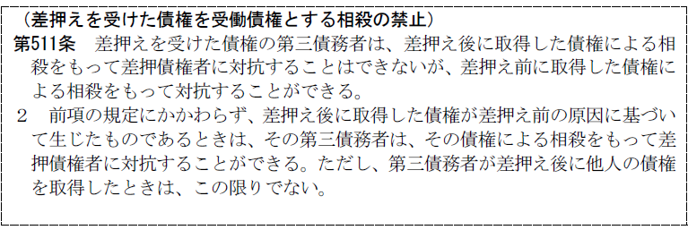
511条２項本文は、相殺の期待を保護するために、差押え後に取得した債権による相殺に関して、取得した債権が差押え前の原因に基づいて生じた債権であるときは、その債権を自働債権とする相殺をもって差押債権者に対抗することができると規定する。破産法の規律との整合を図る趣旨である。同条項ただし書は、他人の債権を、差押え後に取得した者については、相殺の期待を保護する必要がないことから、相殺を認めないものとしている。
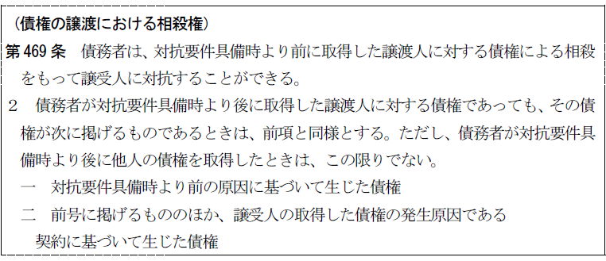
①受働債権についてその弁済期到来前に譲渡があっても債務者が当該譲渡の通知の当時、既に弁済期の到来している反対債権を有していたならば、これを自働債権として譲受人に対し相殺を対抗できる（最判昭32.７.19）。
②債務者が通知後に譲渡人に対する反対債権を取得しても、その債権をもって債務者は相殺することができない（大判昭９.９.10）。
③債務者が債権譲渡時に反対債権を有していれば、たとえ反対債権の弁済期が譲渡債権の弁済期よりも後であって、かつ、債権譲渡の通知時よりも後に到来するものであっても、債務者は反対債権及び譲渡債権の弁済期が到来すれば、譲受人に対して相殺を主張できる（最判昭50.12.８）。
Ⅲ 相殺の方法・効果
1. 当事者の一方から他方に対する意思表示による（506条１項前段）。
2. 条件・期限付相殺は禁止される（506条１項後段）。
条件を付けると相手方の地位を不安定にするし、期限を付しても相殺の遡及効により無意味となるからである。
3. 双方の債権の履行地が異なっても相殺できるが、相手方に対してそれにより生じた損害を賠償しなければならない（507条）。
1. 債権の消滅
相殺によって両債権は対当額で消滅する（505条１項本文）。
2. 遡及効
相殺は、相殺適状の時にさかのぼって効力を生ずる（506条２項）。
なぜなら、両債権が相殺適状にあるときは、当事者はあたかも両債権が決済されたかのように扱うのが通常であるから、遡及効を認めることが取引の実際や公平に適するからである。
3. 相殺の充当
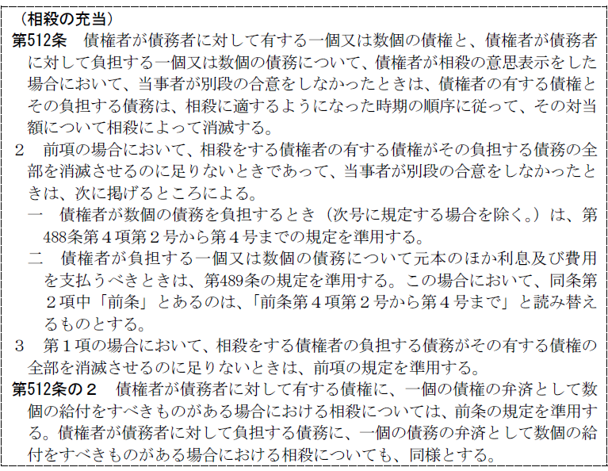
債権者が債務者に対して有する一個又は数個の債権と、債権者が債務者に対して負担する一個又は数個の債務について、以下の順序で消滅する。
(1) 相殺の充当の順序に関する合意があるとき
相殺の充当の順序に関する合意をしたときは、それによって消滅する。
(2) 相殺の充当の順序に関する合意がないとき
上記（1）の合意をしなかったときは、債権者の有する債権とその負担する債務は、相殺適状となった時期の順序に従って相殺によって消滅する（512条１項）。
相殺適状となった時期が同じである元本債権相互間と利息・費用債権の充当については、弁済の充当の規定が指定充当の規定を除いて準用される（512条２項）。
第４節 更改
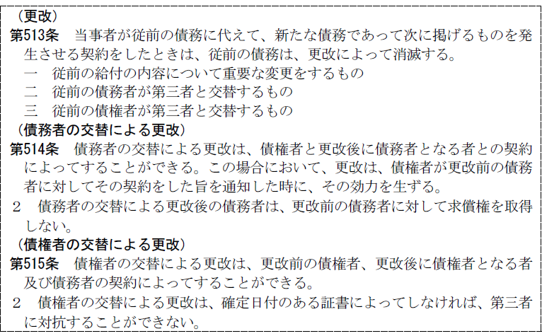
1. 意義
：債務の同一性が失われる等、債務の要素を変更することで、新債務を成立させるとともに旧債務を消滅させる契約
本来の給付とは別の対価を給付する点で代物弁済と類似するが、本来の給付と異なる給付が現実になされることなく、単に給付すべき新たな債務が成立するにすぎない点で代物弁済とは異なる。
2. 要件
(1) 消滅すべき債務が存在すること
(2) 更改の意思（従前の債務に代えて新たな債務を発生させる意思）
(3) 債務の要素に変更があること
(a) 従前の給付の内容について重要な変更をするもの
(b) 債務者又は債権者の交替がされるもの
3. 契約当事者
(1) 債権者の交替による更改
新旧債権者と債務者（515条１項）
(2) 債務者の交替による更改
債権者と新債務者のみでも可能である。旧債務者の意思に反するときであってもできる（514条１項前段）。ただし、効力は債権者が旧債務者に通知した時に生ずる（514条１項後段）。
4. 効果
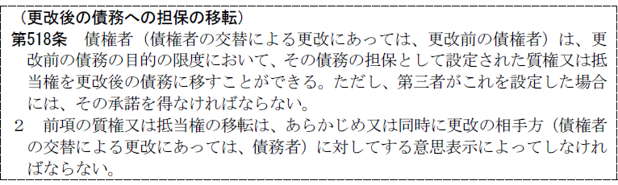
旧債務が消滅し、これと同一性のない新債務が成立する。
担保権・保証債務等も消滅するが、債権者の単独の意思表示により新債務に質権・抵当権を移すことができる。ただし、第三者が設定したものであるときは、その承諾が必要である（518条１項）。
5. 更改契約の解除
Ｑ 新債務の不履行を理由とする更改契約の解除は可能か。
→ 肯定説（大判昭３.３.10）
更改も１つの契約であるから、契約解除の一般原則により更改契約を解除できる。
新旧両債務が当事者間にのみ存した場合には旧債務が復活するが（大判昭３.３.10）、旧債務が新債務の当事者以外との間に存した場合は、旧債務は復活しない（大判大５.５.８）。
第５節 免除
1. 意義
免除とは、債権者が一方的な意思表示によって無償で債務を消滅させることをいう（519条）。
免除は単独行為であって、債権の放棄に他ならない。
※ 免除は単独行為であるが、債務者に不利益にならない限り、これに条件を付しても構わない。
2. 要件
(1) 免除者に処分権限があること
(2) 債務者に対する意思表示によってなされること
3. 効果
債務が消滅する。
一部免除も、その限りで債務が消滅する。
もっとも、第三者の権利を害することはできないので、債権が第三者の権利の目的になっている場合は、免除の効果はその第三者に及ばない。
第６節 混同
1. 意義
混同とは、同一人に債権と債務が帰属することをいう（520条）。
2. 効果
(1) 債権は消滅する（520条本文）。
（理由）
自己が自己に対して債権を有し、自己への履行を請求することは無意味である。物権の混同（179条）と同趣旨である。
ex．土地の賃借人が土地の所有権を取得することにより賃貸人の地位を承継した場合、土地の賃借権は消滅する（大判昭５.６.12）。
(2) ただし、債権が第三者の権利の目的であるときは消滅しない（520条ただし書）。
(3) 債権が第三者の権利の目的となっていない場合でも、債権を存続させることに意味がある場合には、混同の効果は否定される。
＜判例＞ 最判昭40.12.21
「不動産の賃借人が賃貸人から当該不動産を譲り受けてその旨の所有権移転登記をしないうちに、第三者が右不動産を二重に譲り受けてその旨の所有権移転登記を経由したため、前の譲受人たる賃借人において右不動産の取得を後の譲受人たる第三者に対抗できなくなつたような場合には、一たん混同によつて消滅した右賃借権は、右第三者に対する関係では、同人の所有権取得によつて、消滅しなかつたものとなる」。
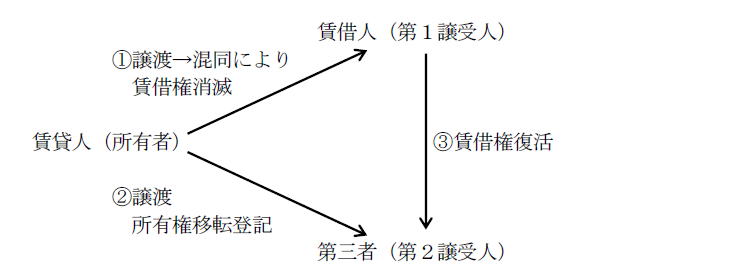